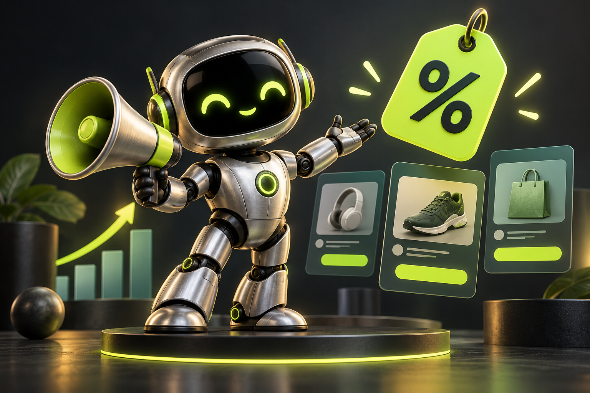
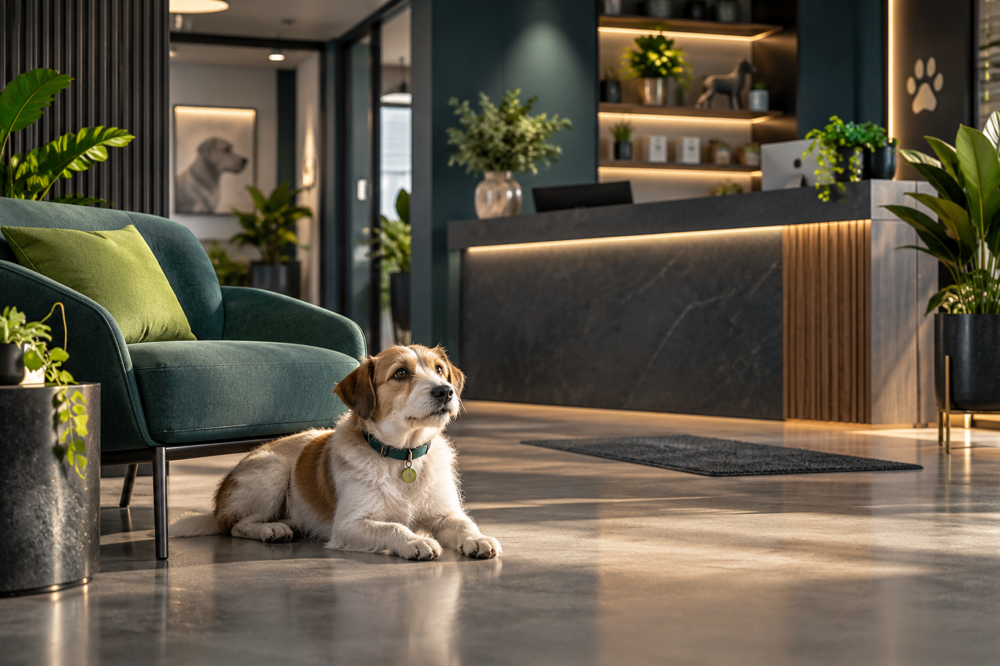
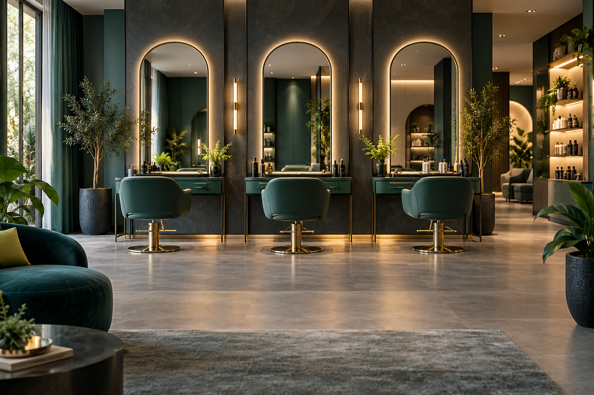

53%
Empresas com website
Indicador de adoção no Brasil, entre empresas com 10 ou mais pessoas ocupadas.
■ Parcela destacada: 53%□ Restante: 47%
TIC Empresas 2024 ↗WEB ROCHA / DESIGN, TECNOLOGIA E CONEXÃO
Criação e modernização de sites para pequenas e médias empresas que querem uma presença profissional e um caminho simples até o atendimento.
Atendimento direto com Alexandre · Niterói / RJ · Projetos a distância
ESTRATÉGIA, NÃO SÓ APARÊNCIA
Conheça os dados e veja como presença digital, atendimento e organização podem trabalhar juntos.
Indicador de adoção no Brasil, entre empresas com 10 ou mais pessoas ocupadas.
Uso de mensagens pelas empresas brasileiras pesquisadas.
O QUE FAZEMOS
Do primeiro site à renovação de uma presença que já existe, o projeto começa entendendo o seu negócio.

Apresente sua história, seus serviços e as informações que o cliente precisa para dar o próximo passo.
Reorganize o conteúdo e renove o visual de um site que já não acompanha a sua empresa.

Páginas adaptadas ao celular, botões de WhatsApp e caminhos claros até o atendimento.
EXPERIÊNCIAS E APLICAÇÕES
Informação atualizada, sem refazer a vitrine a cada novidade.
Entender a solução ↗
Uma data importante pode abrir uma boa conversa.
Entender a solução ↗
A oferta certa para um público que faz sentido.
Entender a solução ↗Retome o relacionamento com cuidado e contexto.
Entender a solução ↗Seu site pode ganhar novas funcionalidades conforme o seu negócio cresce. Apresentamos as possibilidades e você escolhe o que implantar.
Conhecer possibilidades ↗A experiência do buscador e do portal orienta estas aplicações. Cada negócio exige fontes, cadastros, mensagens e regras próprios. O objetivo é apoiar o atendimento e a organização; vendas dependem também da oferta e da negociação.
UM PROJETO PARA A SUA ROTINA
Site, contato e acompanhamento para valorizar serviços, facilitar agendamentos e entender o retorno das campanhas.
Conhecer possibilidades ↗Uma apresentação que valoriza a hospedagem, conecta o visitante ao atendimento e organiza oportunidades de reserva.
Conhecer possibilidades ↗
Site e ferramentas de relacionamento para apoiar a equipe, os agendamentos e o acompanhamento das campanhas.
Conhecer possibilidades ↗Catálogo de imóveis, contato pelo WhatsApp e acompanhamento de interessados, visitas e negócios registrados.
Conhecer possibilidades ↗Destinos, roteiros, cotações e campanhas para acompanhar os interessados até a reserva registrada.
Conhecer possibilidades ↗MAIS SEGMENTOS
Apresente seus serviços contábeis, receba solicitações e organize o relacionamento com empresas e profissionais.
Conhecer possibilidades ↗Uma apresentação institucional do escritório, suas áreas de atuação e caminhos de contato.
Conhecer possibilidades ↗Mostre o ambiente, apresente pratos e facilite o contato para pedidos e reservas.
Conhecer possibilidades ↗Apresente produtos e conecte o interesse do visitante ao atendimento da loja.
Conhecer possibilidades ↗
Uma apresentação dos serviços e ferramentas para apoiar o relacionamento e a agenda.
Conhecer possibilidades ↗Apresente o consultório e facilite os caminhos administrativos até o atendimento.
Conhecer possibilidades ↗Apresente especialidades, área de atendimento e um caminho claro para pedir orçamento.
Conhecer possibilidades ↗MAIS POSSIBILIDADES PARA O SEU PROJETO
Entendemos a rotina da empresa antes de propor novas funcionalidades. Cada integração recebe um escopo e orçamento próprios.

Uma apresentação completa da empresa ou uma página dedicada a divulgar um serviço e receber contatos.
Podemos avaliar lembretes de agendamentos, mensagens de aniversário e campanhas para clientes que autorizaram o contato.
Apresentamos novas possibilidades quando fizerem sentido para sua empresa. Você decide o que contratar e aprova o custo antes da implantação.
VEJA NA PRÁTICA
Uma demonstração para o segmento veterinário, com apresentação da clínica e acesso ao contato. Um exemplo do que podemos construir com uma identidade própria.
Abrir demonstração ↗Projeto demonstrativo. Não representa um contrato ou depoimento de cliente.
Cuidado também na
forma de se apresentar.
COMO FUNCIONA
Conversamos sobre objetivos, público, serviços e conteúdo.
Você acompanha o pilotoApresentamos a proposta visual e alinhamos os ajustes do projeto.
Finalizamos o site e orientamos os próximos passos da publicação.
Contratamos o domínio e hospedamos seu site para você. Cuidamos de tudo para colocar sua empresa na internet.
INVESTIMENTO
Vamos definir juntos o escopo antes de começar. Cuidamos da contratação do domínio e da hospedagem para você. Integrações adicionais são definidas conforme o projeto.
Valores acessíveis e pagamento parcelado no cartão.
Uma proposta personalizada para os objetivos e as necessidades da sua empresa.
Manutenção opcional e novas funcionalidades, conforme o que fizer sentido para o seu negócio.
Solicitar minha proposta ↗ANTES DE COMEÇAR
Sim. O projeto considera a navegação em celulares, tablets e computadores, com conteúdo e botões adaptados a cada tela.
Sim. Primeiro analisamos o site atual e o que precisa mudar. A proposta define o que pode ser aproveitado e o que será reconstruído.
Contratamos o domínio e hospedamos seu site para você, tudo por nossa conta. As condições do serviço ficam registradas na proposta.
O prazo é combinado na proposta após avaliarmos o conteúdo, as páginas e as funcionalidades necessárias. A entrega também depende do envio dos materiais e da aprovação das etapas.
A manutenção é opcional. O investimento, as atividades e os limites do serviço ficam definidos na proposta; novas funcionalidades são avaliadas conforme a necessidade.
VAMOS CONVERSAR SOBRE O SEU NEGÓCIO
Preencha um resumo para levarmos a conversa ao WhatsApp. Atendimento direto com Alexandre Rocha, sem compromisso.
Prefiro falar diretamente no WhatsApp ↗QUEM ESTÁ POR TRÁS DA WEB ROCHA
Tecnologia é o que eu construo.
As pessoas são o que dá sentido.
Sou Alexandre Rocha, de Niterói, e estou à frente da Web Rocha. Tenho mais de 14 anos de experiência na área de Tecnologia da Informação e estou no nono período de Engenharia da Computação, na reta final da graduação.
Atualmente, atuo como analista de TI, conectividade e inteligência artificial no maior grupo de moda da América Latina.
Uno essa experiência prática ao aprendizado constante para criar sites e ferramentas de automação que ajudem empresas a apresentar seu trabalho, organizar o atendimento e se aproximar dos clientes.
Também sou pai da Sakura, uma menina linda de 16 anos, e do Giuseppe, meu príncipe de 2 anos. Sou filho da Terezinha e do Nelson. Minha família é uma parte muito importante de quem eu sou.
Acredito em aprender e evoluir todos os dias. Levo esse olhar para cada projeto: conversar, entender a rotina de quem está do outro lado e construir soluções que façam sentido para o negócio.
Aqui, você fala diretamente comigo. Da primeira ideia às próximas melhorias, quero que a tecnologia seja algo próximo, compreensível e útil para você.
Vamos conversar sobre sua ideia ↗